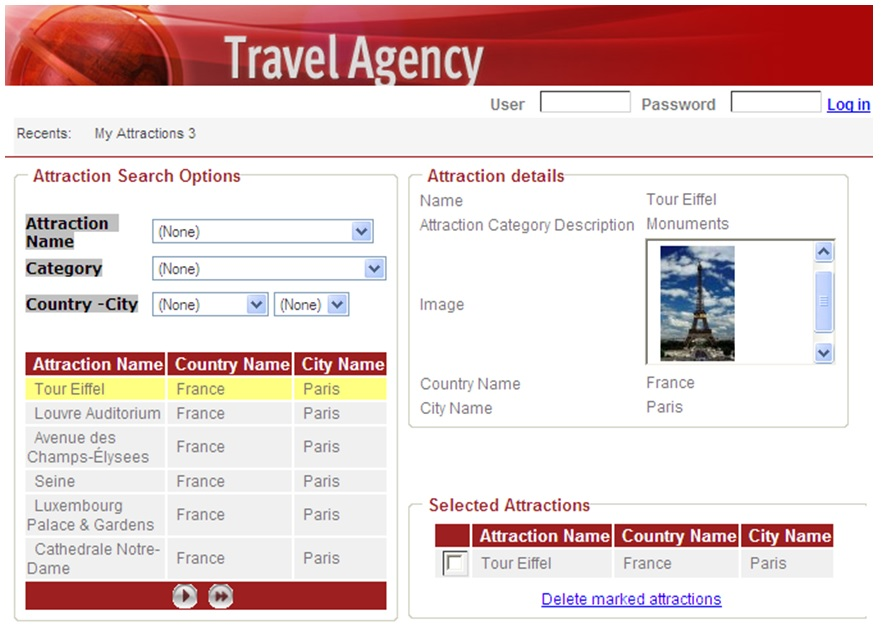

This property saves the control context by default with the corresponding information. Values
Description
Default value: False Suppose a Web Panel with a grid. This grid has a Notify Context Change property configured in True. What does this mean? That it allows you to monitor a change in context related to the grid, that is, if the user selects a line, the application will detect it, saving this line selected as context.  What do we understand by context? When we talk about Context, we mean the context of our application in a form. When we access the CustomerId Textbox, our context is CustomerId; when we access the invoice lines grid, our context is the invoice line, and so on. When we move inside a screen, we're changing the context of attributes and variables. This information about context changes is essential to create an intent-oriented interface. Our approach enables you to trigger events and take actions depending on the context information of our application (the place where the cursor is positioned). This is why we say that the User Interface (UI) is context-sensitive, giving more power to the final applications. This property is not available when the attribute is a formula. For attributes and variables, it only applies to non read-only fields (it can be any control: edits, checkboxes, comboboxes, radio buttons). When the variable/attribute gets the focus, the context is saved with that information. Value changes in the variable/attribute aren't detected, only the cursor's focus on it. The same happens for attributes/variables in freestyle grids. In case of a standard grid:
In case of standard/freestyle grids:
You can change the information tracked by programming the SetContext event. Scope Objects: Transaction, Web Panel See Also
|
| Backlinks | |
| Attribute/Variable control properties in Web Forms | Free Style Grid Properties |